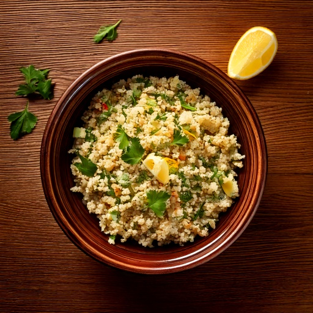

Fluffy herb-seasoned quinoa pilaf cooked in vegetable broth — a protein-rich grain side.
Nutrition (per serving)
194
Calories
31g
Carbs
7g
Protein
5g
Fat
4g
Fiber
~40
Est. GI
Why this fits a diabetes-friendly diet
At 31g of carbs per serving, it's worth pairing with protein or fat and watching portion size to keep the resulting blood sugar rise gradual, and its estimated glycemic index of ~40 means the carbs it does have tend to digest slowly rather than spiking blood sugar fast.
Ingredients
- 1/2 cup quinoa
- 1 cup low-sodium vegetable broth
- 1/4 cup onion
- 1 clove garlic
- 1 tsp olive oil
- 2 tbsp fresh parsley
- 1/4 tsp black pepper
- 1 tbsp lemon juice
Instructions
- Sauté onion and garlic in olive oil 2 minutes.
- Add quinoa and toast 1 minute.
- Add broth; bring to a boil.
- Cover and simmer 15 minutes until liquid is absorbed.
- Fluff with a fork; stir in parsley and lemon juice.
In GlucoBeacon
This recipe is one of 150+ in the GlucoBeacon Recipe Library, each with full nutrition breakdown, glycemic index estimate, and one-tap logging straight to your blood sugar history. Get notified when GlucoBeacon launches →